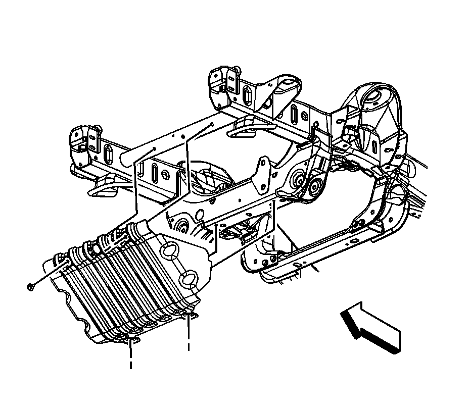
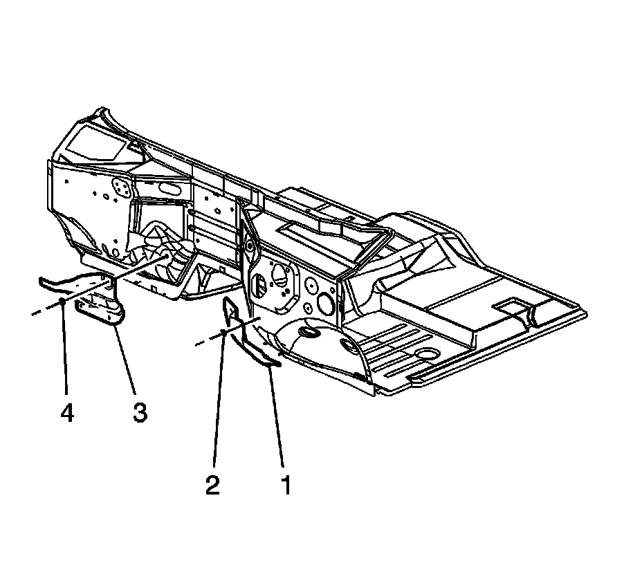

Exhaust Heat Shield Replacement - Dash Panel
Exhaust Heat Shield Replacement - Dash Panel
Removal Procedure

1. Raise and support the vehicle. Refer to Lifting and Jacking the Vehicle.
2. Remove the engine shield bolts and shield, if necessary.

3. For 1500 series vehicles, remove the oil pan skid plate bolts and skid plate, if equipped.

4. For 2500 series vehicles, loosen the 2 rear oil pan skid plate bolts, remove the 2 front oil pan skid plate bolts and skid plate, if equipped.
5. Remove the catalytic converter, if required. Refer to one of the following:
^ Catalytic Converter Replacement (1500 Series)
^ Catalytic Converter Replacement - Left Side (2500 Series)
^ Catalytic Converter Replacement - Right Side (2500 Series)

6. Remove the dash panel exhaust heat shield nuts (2 or 4).
7. Remove the dash panel exhaust heat shield (1 or 3) from the dash panel studs.
Installation Procedure
1. Install the dash panel exhaust heat shield (1 or 3) to the dash panel studs.
2. Install the dash panel exhaust heat shield nuts (2 or 4).
Tighten the nuts to 9 N.m (80 lb in).
3. Install the catalytic converter, if required. Refer to one of the following:
^ Catalytic Converter Replacement (1500 Series)
^ Catalytic Converter Replacement - Left Side (2500 Series)
^ Catalytic Converter Replacement - Right Side (2500 Series)
4. For 2500 series vehicles, position the oil pan skid plate and tighten until snug the 2 rear oil pan skid plate bolts, install the 2 front oil pan skid plate bolts, if equipped.
Tighten the bolts to 28 N.m (21 lb ft).
5. For 1500 series vehicles, position the oil pan skid plate and install the oil pan skid plate bolts, if equipped.
Tighten the bolts to 28 N.m (21 lb ft).
6. Position the engine shield to the frame.
7. Install and tighten the engine shield bolts.
Tighten the bolts to 20 N.m (15 lb ft).
8. Lower the vehicle.